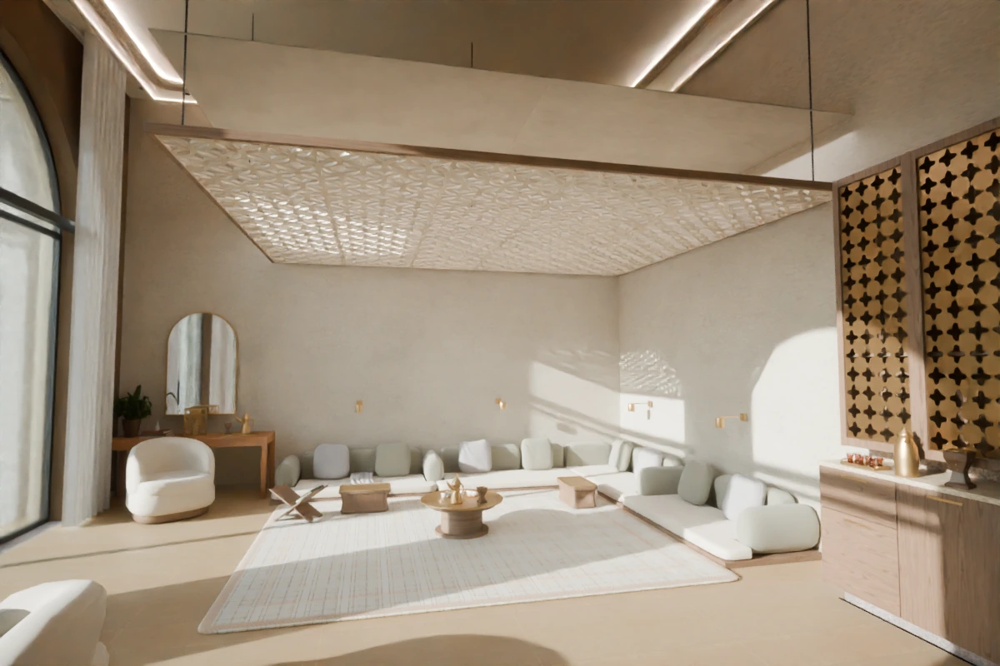
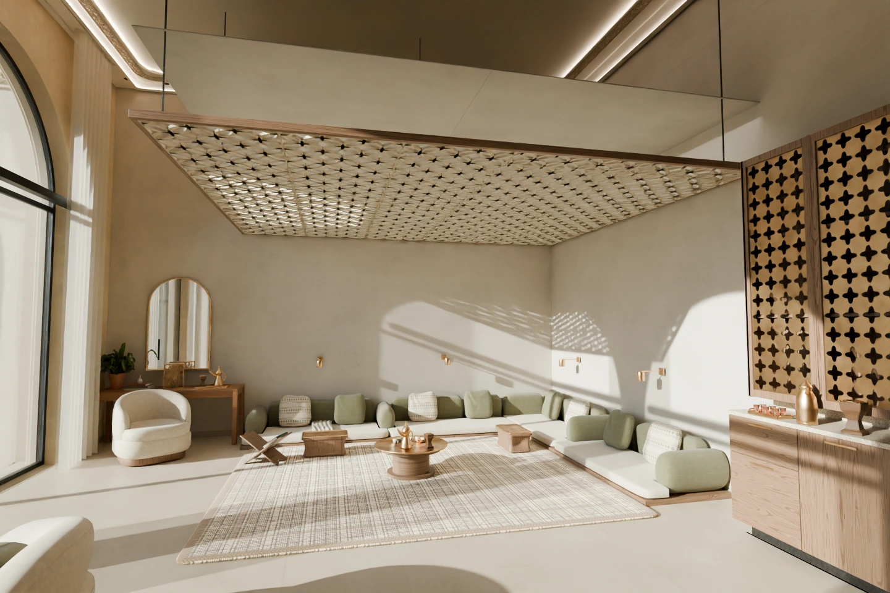

الجلسة العربية




معاينة Unreal الأولية بدقة 1200 × 800، قبل اكتمال تفاصيل السجادة والمشربية. اللقطتان من المراجعة 13، بنفس موضع الكاميرا والعدسة.


معاينة Unreal الأولية بدقة 1200 × 800، قبل اكتمال تفاصيل السجادة والمشربية. اللقطتان من المراجعة 13، بنفس موضع الكاميرا والعدسة.